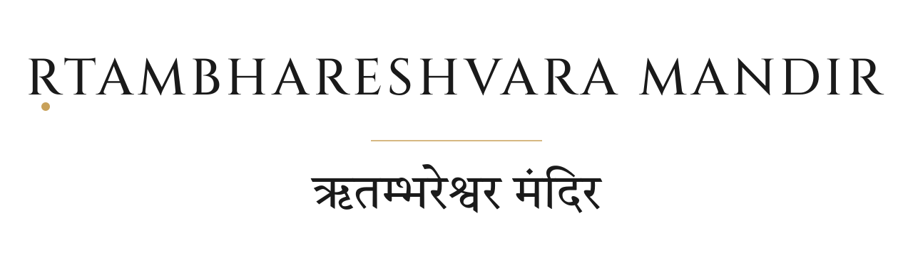

1 · Bilingual lockup — ṚTAM Foundation / ऋतम् फाउंडेशन (common register)

Four lockup compositions that combine the wordmark with Devanagari names or supporting copy. Each is a standalone SVG, geometry-shared with the US-3 wordmark so the sacred mark stays consistent across the system.


